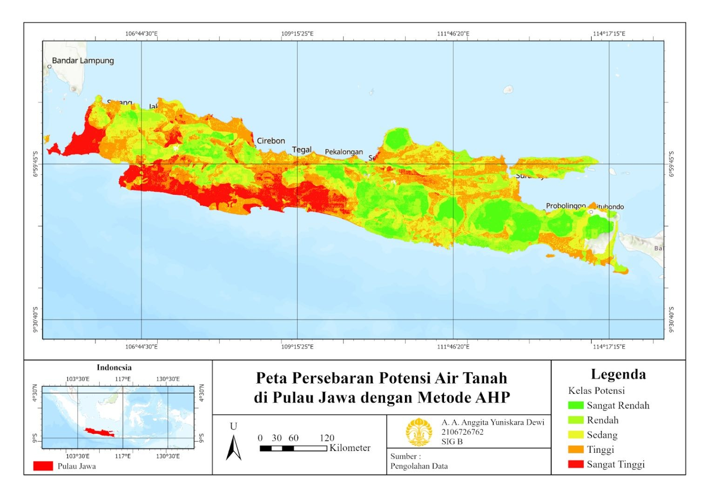

Identifikasi Potensi Air Tanah di Pulau Jawa dengan Analytical Hierarchy Process (AHP)
Latar belakang
Air tanah adalah air yang melekat pada butir tanah, terletak di antara butir tanah, dan tertahan di atas lapisan yang sulit ditembus air, seperti lempung dan batuan padat. Keberadaannya dipengaruhi banyak faktor sekaligus, sehingga untuk mengetahui di mana potensinya tinggi atau rendah, penilaian tidak bisa bertumpu pada satu variabel saja dan perlu mempertimbangkan beberapa kriteria dengan bobot yang berbeda.
Untuk itu, proyek ini memakai Analytical Hierarchy Process (AHP) yang dikembangkan oleh Thomas L. Saaty, yaitu model pendukung keputusan yang menguraikan masalah multi-kriteria yang kompleks menjadi hierarki, mulai dari tujuan, faktor, dan kriteria hingga alternatif. Dengan begitu, masalah menjadi lebih terstruktur, sistematis, dan mudah dipecahkan. AHP diterapkan untuk memetakan potensi air tanah di Pulau Jawa dengan delapan variabel dan mengelompokkannya ke dalam lima kelas potensi, dari sangat rendah hingga sangat tinggi.
Data yang digunakan
| Data | Format Data | Jenis Data |
|---|---|---|
| Curah hujan | Raster | Sekunder |
| Geomorfologi | Vektor | Sekunder |
| Litologi | Vektor | Sekunder |
| Jenis tanah | Vektor | Sekunder |
| Tutupan lahan (land cover) | Raster | Sekunder |
| Kelerengan (DEM) | Raster | Sekunder |
| NDVI | Raster | Sekunder |
| Topographic Wetness Index (TWI) | Raster | Sekunder |
Metode
Seluruh data adalah data sekunder yang diolah dengan metode AHP. Setiap variabel dibandingkan secara berpasangan untuk menentukan bobotnya, lalu peta tiap variabel ditumpangsusunkan (overlay) berdasarkan bobot tersebut. Hasilnya diklasifikasikan menjadi lima kelas potensi air tanah: sangat rendah, rendah, sedang, tinggi, dan sangat tinggi.
Bobot kedelapan variabel hasil AHP ditunjukkan pada tabel berikut.
| No | Variabel | Bobot (%) |
|---|---|---|
| 1 | Curah hujan | 30,41 |
| 2 | Geomorfologi | 16,13 |
| 3 | Litologi | 15,50 |
| 4 | Jenis tanah | 8,98 |
| 5 | Land cover | 8,97 |
| 6 | Lereng | 8,46 |
| 7 | NDVI | 6,80 |
| 8 | Topographic Wetness Index | 4,73 |
| Consistency Ratio | 0,0986 |
Hasil
Potensi air tanah di Pulau Jawa terbagi dalam lima kelas dan menunjukkan pola mengelompok. Potensi sangat tinggi cenderung berada di bagian barat Pulau Jawa, sedangkan potensi sangat rendah lebih banyak di bagian timur. Kelas lainnya tersebar relatif merata di hampir seluruh wilayah. Perbedaan ini mencerminkan karakteristik wilayah yang beragam, seperti lereng curam, jenis tanah andosol, dan bentuk lahan berbukit.

Nilai Consistency Ratio sebesar 0,0986 berada di bawah batas 0,1, sehingga pembobotan dinilai cukup konsisten dan dapat diterima. Curah hujan menjadi variabel paling berpengaruh karena jumlah dan intensitasnya menentukan banyaknya air yang meresap ke dalam tanah. Geomorfologi menyusul karena bentuk lahan mengatur pergerakan dan penampungan air, lalu litologi yang menentukan kemampuan batuan menyimpan air. Variabel lain berperan lebih kecil: jenis tanah (tekstur dan bahan organik), tutupan lahan (kawasan bervegetasi menaikkan infiltrasi, sedangkan permukiman dan lahan terbangun menguranginya), lereng (laju aliran permukaan), NDVI (indikator vegetasi), dan TWI (kelembaban tanah berdasarkan topografi).
Kesimpulan
Potensi air tanah di Pulau Jawa mengelompok, dengan potensi sangat tinggi di barat dan sangat rendah di timur. Curah hujan, geomorfologi, dan litologi menjadi tiga faktor terpenting dalam penentuan potensi tersebut. Pembobotan AHP yang digunakan cukup konsisten (CR 0,0986), tetapi hasil pemetaan ini masih berbasis data sekunder dan belum divalidasi lapangan, sehingga perlu diuji dengan survei, misalnya melalui random sampling, sebelum dijadikan acuan.
← View other projects